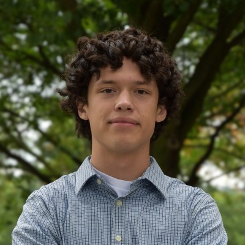

Photography
Background
I am Rowan Potts, a Junior computer science student at James Madison University. I enjoy shooting events, sports, and portraits
My work has included editorial photography for JMU's award-winning newspaper, The Breeze, and this site is where I share both my photography and the technical projects I am building alongside it.

Professional
Summary
Motivated Computer Science major with experience in programming, algorithms, and software development, with a growing interest in software engineering, machine learning, and real-world technical problem solving.
Education
James Madison University
B.S. in Computer Science, expected May 2027
Minor in Robotics with an emphasis on Machine Learning and AI
Relevant coursework: Data Structures and Algorithms, Software Engineering, Object-Oriented Programming, Computer Systems, Web Application Development, Applied Algorithms, Statistical Analysis, and Calculus.
Projects
- Built and host a personal website using HTML, CSS, and JavaScript to showcase photography and coding projects.
- Worked on a team nutrition software project using scrum and agile methods.
- Currently developing an autonomous vehicle collision avoidance system using ROS2, camera data, and LiDAR.
Skills
- Programming: Java, C, Python, ROS2, JavaScript, HTML, CSS
- Tools: Git and Scrum
Experience and Leadership
- Assistant Manager at Sudley Club Incorporated from August 2021 to August 2024.
- Member of the Madison Artificial Intelligence Club, contributing to a team sports analytics project.
- Eagle Scout with leadership experience managing teams, logistics, and service projects.